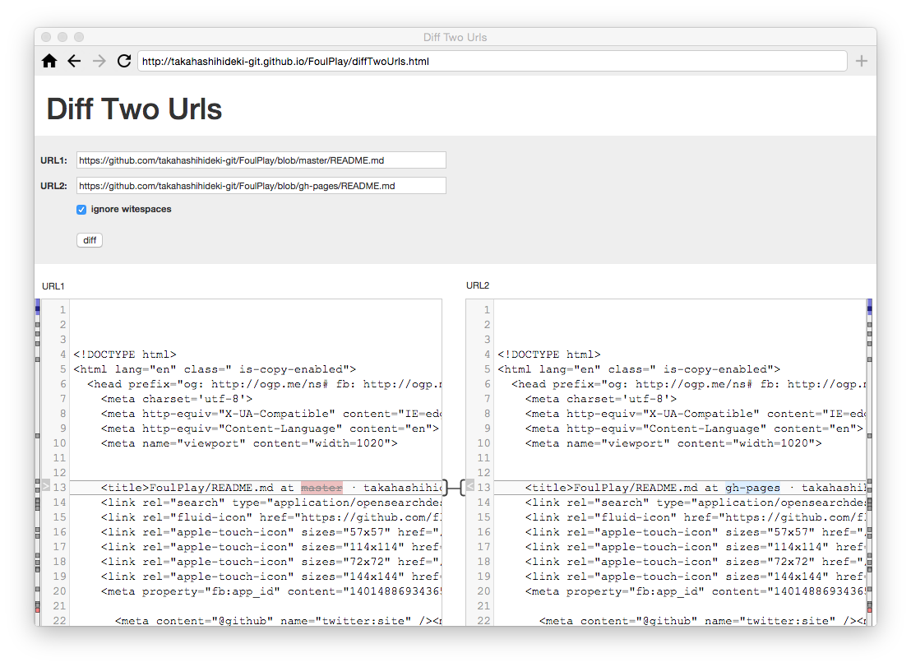

Diff Two Urls は、2つの URL の HTTP レスポンスボディの内容を比較するためのアプリです。
実体は、mergely です。制約のない Cross-Origin XMLHttpRequest を実行できる Foul で mergely を動作させることによって、ドメインを超えた「diff」を自由に実行できるようになります。

下記の URL を Foul のアドレス欄に入力して表示します。表示されたら、アドレス欄の右にある「+」 ボタンをクリックして、ショートカットに登録します。
http://takahashihideki-git.github.io/FoulPlay/diffTwoUrls.html
その後、リロードするか、ホーム画面に追加されたアイコンをクリックして再表示すると、ローカルファイルシステムにアクセスできるようになります。
左右のペインにそれぞれの URL の HTTP レスポンスボディが読み込まれ、双方の差分部分がハイライトで表示されます。